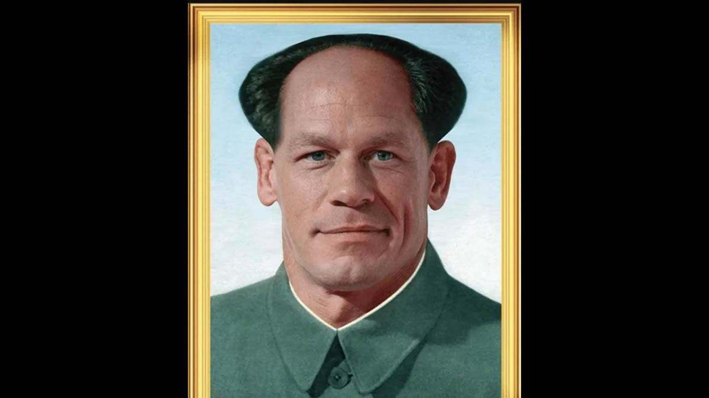
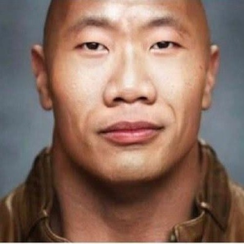
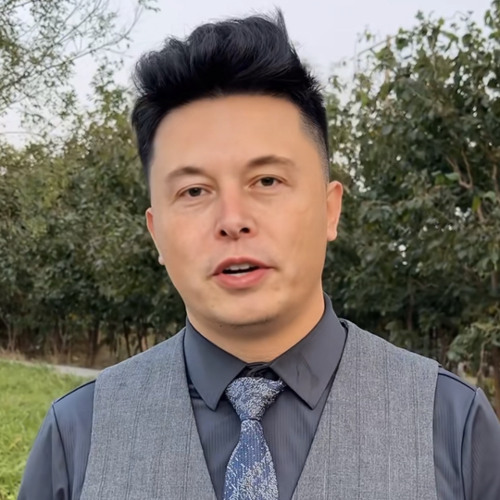

John Xina also know as Jiang Xina or Zhong Xina is an exploitable image macro of WWE Wrestler John Cena Photoshopped to look like Chinese communist revolutionary Mao Zedong. Although the phrase "John Xina" was used on Twitter as early as 2016, it wasn't until May 2021 that image macros associated with the nickname first appeared on Instagram, due to the nickname resurfacing on Twitter in May 2021 because of a viral video of Cena defending China's military pressure for reunification with Taiwan.
The Wock / Dwayne "The Wok" Johnson or Chinese Dwayne Johnson refers to a series of photoshops of Dwayne "The Rock" Johnson made to resemble a Chinese or Asian person. The earliest related meme of its type was uploaded to Facebook in 2015. A version of the meme called "The Wock" using an image of The Rock put through FaceApp's Asian filter became notably prominent in late 2021 following the popularization of China's Social Credits System memes and John Xina memes, featuring a photoshop that imagines John Cena as Chinese to criticize his defense of China's military pressure for reunification with Taiwan.
Chinese Elon Musk, also known as Yi Long Musk or Elong Musk, refers to a Chinese lookalike or doppelganger of Tesla and SpaceX CEO Elon Musk. The man first went viral on Douyin, China's version of TikTok, in late 2021. He trended going into 2022 due to his uncanny resemblance to the billionaire, however, many online believed he was a deepfake using AI technology to replace his face with Musk's.
